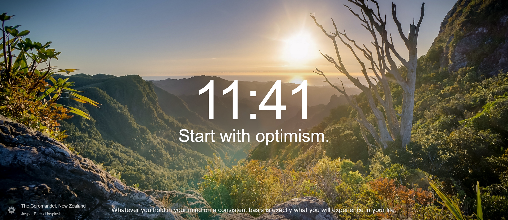

Aliniat obișnuit care se delimitează de următorul aliniat printr-un rand gol.
Acum urmează cel de al doilea aliniat, care este separat în fișier de aliniatul anterior printr-un rând gol.
Ca de obicei orice aliniat (în Word, LaTex, etc) se termină prin apăsarea tastei Enter, și pentru a creu un rând nou mai dăm o dată pe tasta Enter.
Pentru a crea liste neordonate (adică fără ordonare după numărul de ordine, de exemplu, în fața item-ului avem bulină) folosim simbolul ‘-’.
Dacă avem nevoie să creăm liste deitemi în cadrul altor liste facem la fel cași la crearea primei liste, doar că mutăm rândul cu 2 poziții:
Pentru a avea liste ordonate (adică liste numerotate) folosim în loc de simbolurile ‘-’ sau ‘*’ litere sau numere. De exemplu:
Lafel putem avea liste ordonate în cadrul listelor ordonate. De exemplu:
Unu
Doi
Inserarea unui link se face relativ simplu: Lista temelor și alocarea lor
Să dăm explu niște poze:
